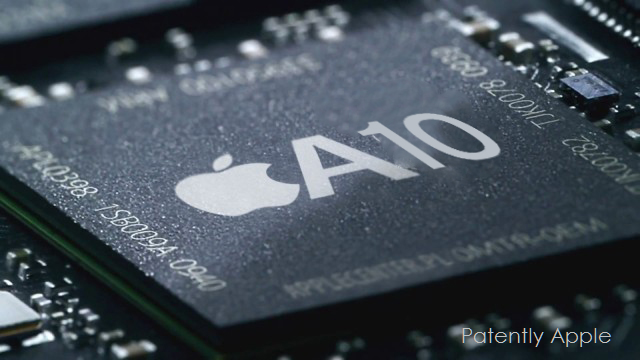

An Introduction to iOS
Development
Victor Poupet
Embedded Systems
iOS
- released in 2007 (with the first generation iPhone)
- Multi-touch interface (almost button-less)
- Gesture recognition (swipe, pinch, etc.)
- Somewhat based on Mac OSX
- Core Foundation and Foundation frameworks
- Cocoa touch instead of Cocoa
- Darwin (Unix-like system)
Version History
- 2007 - iPhone OS 1
- 2008 - iPhone OS 2 (iPhone SDK, App Store, 3rd party apps)
- 2009 - iPhone OS 3 (iPad)
- 2010 - iOS 4 (limited multitasking)
- 2011 - iOS 5 (iCloud)
- 2012 - iOS 6
- 2013 - iOS 7 (extended multitasking)
- 2014 - iOS 8 (Swift, Metal)
- 2015 - iOS 9 (split view)
- 2016 - iOS 10 (Siri, 3D touch)
- 2017 - iOS 11 (ARKit, Files, more multitasking)
Fragmentation
- iOS runs on a limited number of devices (similar architecture, similar iterface)
- Most devices run the latest version of iOS
- OS, hardware and SDK are developped by the same company
- Devices have varying screen size and resolution
- Some features are not available to all devices (multitasking, Siri, camera, etc.)
- Two main device families :
Distribution
The only officially accepted way to add apps to an iOS terminal is to use Apple's App Store
- Apple has total control over which apps are accepted on the store
- delay between submission and availability
- Apple guidelines are strict and sometimes difficult to match
- guarantees a minimal quality of apps
- developper license (99$ / year) necessary to submit an app
- free developper account sufficient to develop and install apps on personal devices
- developpers receive 70% of the price of the sold app
About this Lecture
iOS development is a vast topic
- many elements cannot be addressed in this lecture (including important ones)
- even with more time, one never fully knows all about iOS programming
- hundreds of existing classes
- thousands of methods and attributes
- best way to learn is to look for examples, ask questions and read the documentation
- the API, SDK and language evolve quickly
- examples and discussions on the Internet are already outdated
- this lecture is also already outdated
- most elements are interconnected
- no natural order to present things
- examples require to use some elements before explaining them
Generalities
Developping for an embedded system
- cross-compiling
- stronger contraints
Conception based on user interface
- Model-View-Controller architecture
- Reactive programming
- Event-based programming
Mobile Terminals
- Miniature computer
- Embedded system
- Reactive system
- Smartphone vs.Tablet
- screen size is different
- phone calls
- most of the rest is identical
Architecture

Processor
Storage
Other hardware
- Network
- Accelerometer, gyroscope
- GPS location
- Camera
- etc.
iOS vs. Android

Developper
Programming language
- Swift and/or Objective C
- some C and C++
Development environment
Development kit
Developper
Programming language
- Java
- some C++
- (Kotlin, possibly Swift in the future)
Development environment
Development kit
Constraints
Limited resources
- Memory
- Beware of memory leaks
- Java (Android): garbage collector
- Swift / Objective C (iOS): Automatic Reference Counting (ARC)
- Energy
- Some activities are very demanding (GPS, camera, etc.)
- Avoid inefficient algorithms (CPU drains battery)
Handle urgent events
- Low memory alert
- Low battery alert
- Phone call interruption
Other Constraints
User interface
- Simple and convenient to use
- Should be reactive
- Should fit with the OS and other apps ("look and feel")
Fiability
- Avoid errors and crashing (no error handling when app crashes)
Security
- Device holds sensitive personal data
- Apps each have their own files directory and run in a sandbox (iOS only)
Speed
- App should work on slower devices, with other apps using resources
First Example
→ Writing the first app in XCode : Greeting
Workflow
Mobile development is built around the user interface (screen):
- Design Graphical User Interface (GUI)
- Define and handle events
Events
Interruption
- stops execution and jumps to a specific address
- low level
- hardware exceptions
Examples :
- division by zero
- reset button
- process interruption
Event
- stops execution and runs a procedure
- higher level
- handled by OS interface
Examples :
- click a button
- move the cursor
- thread finishes a computation
Call-back
Events are handled by "call-backs"
- Enable an event
- associate a routing procedure to an existing event
- Disable an event
- remove association with procedure (event will not trigger the procedure if it happens)
- Wait for an event
If an event is not enabled (or disabled), the OS will consider that there is nothing to be done.
The running program will not be notified of unhandled events occurring.
Example
→ Programmatical version of Greeting